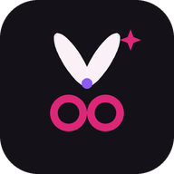

Atmos Studio — Politika privatnosti
Važi od 13.11.2026.
Atmos Studio je aplikacija za salone i druge delatnosti koje rade po terminima. Autor je Gemb-Bit Željko Ilić.
Koje podatke aplikacija čuva
Podatke koje korisnik (salon) upiše: podatke salona, zaposlene, cenovnik usluga, klijente (ime, telefon, e-pošta, rođendan, beleške i upozorenja), termine i račune.
Gde se podaci čuvaju
- Na uređaju korisnika — u memoriji aplikacije.
- Na Google Drive-u korisnika — samo ako korisnik sam uključi „Google Drive“ u Podešavanjima. Tada se podaci čuvaju u jednom fajlu „Atmos Studio — podaci.json“ na njegovom Drive-u.
Autor aplikacije nema pristup podacima salona i njegovih klijenata. Za prijavu (licencu) na server se šalju samo korisničko ime, PIN i oznaka uređaja.
Podaci o klijentima — odgovornost salona
Salon koji upisuje podatke o klijentima je rukovalac tim podacima i odgovoran je da ih koristi u skladu sa Zakonom o zaštiti podataka o ličnosti (obaveštenje klijenta, pristanak gde je potreban, brisanje kad prestane potreba). Klijent se briše zajedno sa svojim podacima.
Poruke klijentima
Aplikacija sama ne šalje poruke — otvara Viber, WhatsApp ili SMS sa pripremljenim tekstom, a poruku šalje korisnik.
Google Drive
Aplikacija traži samo dozvolu drive.file: pristup isključivo fajlu koji je sama napravila. Ne vidi ostale fajlove, mejlove ni kontakte. Korišćenje podataka dobijenih od Google API-ja je u skladu sa Google API Services User Data Policy, uključujući zahteve „Limited Use“. Veza se prekida u aplikaciji ili na myaccount.google.com/permissions.